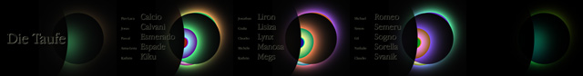
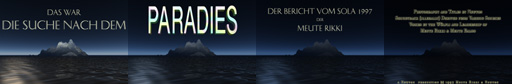
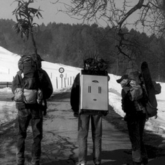
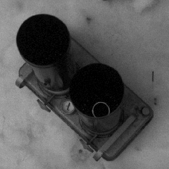
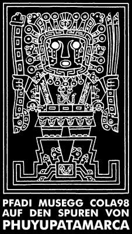
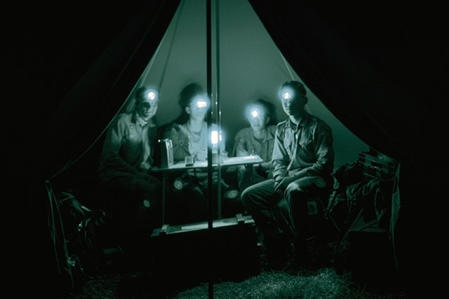

Das ist nun sehr lange her. Was aktuell läuft, steht unter www.musegg.ch und pfadi-luegisland.ch. In der Erinnerung an viele schöne Stunden das Folgende:
Ein Leckerbissen für alle, die sich noch erinnern können: Der wohl aufwendigste Elternabend von 5.&6. Stamm und Ufertrupp war jener von 1993 – wir betrieben solchen Aufwand, dass er erst 1994 über die Bühne ging: Die Haxenbauers, eine ureigene 5.&6. Stamm und Ufertrupp Produktion, welche die Eltern so zu begeistern vermochte, dass die Kollekte sogar unsere Auslagen deckte...
Zum 70jährigen Jubiläum wurde ein Theaterstück geschrieben, einstudiert und aufgeführt: Und aus Ock ward Eck. Als Gedankenstütze: das war jene Aufführung mit der Melodie aus Les Miserables, dem knall-päng-roten Gummiboot, dem Lied von der schönen Müllerin und Käptn Igloo...
Und es begab sich im Jahre 1426, dass eine Galeere, bis an ihr höchstes Bord mit verwegenen Peinigern gefüllt und getragen von den Wogen des Vierwaldstättersees, sich Luzern näherte. Das Gemüt dieser Unholde war so schwarz wie die Nacht, die sie durchruderten und ihre Absichten von so unvorstellbarer Grausamkeit, dass wir lieber gleich selbst einen Blick darauf werfen!
Aufwändige Diashows mit viel
Technik hatten bei uns Tradition.
Hier einige synthetische Bildchen aus der Diashow zum
Sommerlager 1997 der Meute Rikki.


Der Aladdin: sein Herzstück
und der Transport auf die Krienseregg.
Leider stellte sich die Leistung als mangelhaft heraus...
 
Sommer 1998: CoLa98 auf dem Mont Soleil

Wanderlager 1992
Einst waren sie die gefürchtesten Bankräuber Europas...
...dann wurden sie erwischt und zu langen Haftstrafen verurteilt...
...weil es ihnen im Gefängnis nicht
gefiel, entschlossen sie sich, auszubrechen.
Der genial
ausgetüftelte Plan gelang...
...nun werden sie von einem karrierebesessenen Polizeioffizier quer durch Europa gejagt. Sie sind...
Ausbrecher auf der Flucht

Newton, 16 Nov 2003
Revuen
{kind=link}
{kind=link}
{kind=link}
{kind=link}
{kind=link}
{kind=link}